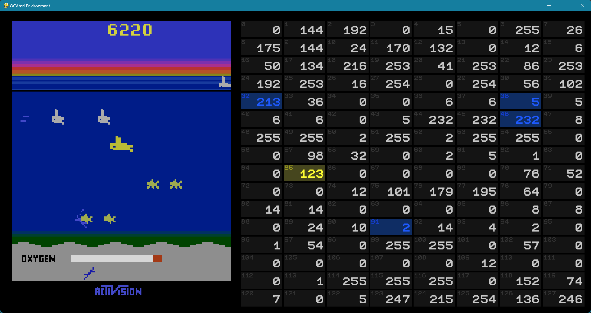

REM GUI
RAM Extraction Method GUI
This GUI is used to analyze and alter the RAM while playing Atari. It can be run via rem_gui.py.
How to Use
In the __main__ method of rem_gui.py, you define the Atari game to run. Start the GUI by executing that script file.
The GUI
 On the left, the current game image is rendered. The right panel visualizes the RAM as a grid where each RAM cell is shown with its ID and its current value.
Interact with the GUI
You play the Atari game by using the keys W, A, S, D, Space, and Esc. Pause/resume the game with P.
By mouse-clicking any object on the game screen, all (presumably) relevant RAM cells for that object will be highlighted blue.
You alter a RAM cell by clicking the respective cell (it will be highlighted yellow). You can then enter a new number (between 0 and 255), confirm with Enter. Changes become visible only if the game is resumed.
Besides, rotating the mouse wheel in- or decrements the currently hovered cell's value.
How it is Done
If you click a pixel on the game screen, a causative RAM analysis is run in the background for that pixel. The analysis identifies all RAM cells that (individually) affect the appearance of the clicked pixel by altering the cell's value and comparing the resulting screen image with the original one.